|
|
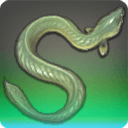 |
Iron Noose |
| 80 Lakes | |
| A king among ropefish. |
Scales like metal and a spine tougher than any sailor's rope have seen this ropefish survive far more summers than is common in the species. It has even learned to better conserve the air it intakes, so that it need not rise to the surface overmuch, further prolonging its life. |
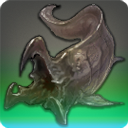 |
Olgoi-Khorkhoi |
| 80 Sands | |
| Of those who claim to have seen Olgoi-Khorkhoi swimming through the endless desert sands, nearly all are known for their love of the red. |
Deep beneath the sands of the Sagolii Desert lurks a beast so terrible, the huntresses of Forgotten Spring's U tribe only speak of it in whispers, for it is said that to merely utter the name Olgoi-Khorkhoi is to bring ill fortune upon your kith and kin. |
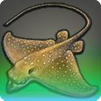 |
Magic Carpet |
| 80 Sands | |
| A king among dune mantas. |
Every night around the communal bonfires, children of the U tribe are regaled with epic tales of ancient battles fought by wizards riding the backs of magicked dune mantas. If the children's claims are to be believed, such mantas still swim the dunes of the Sagolii as they did in ages past. |
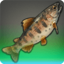 |
Daniffen's Mark |
| 80 Rivers | |
| A king among seema. |
The Ishgardian legend of Saint Daniffen tells us that the dragoon would oft practice his lancework on the shores of the mighty Coerthas River. To better his aim that it might always be true, he sought only the nimblest of seema to serve as his marks. |
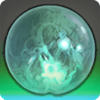 |
Charon's Lantern |
| 80 Lakes | |
| A king among lamp marimo. |
Uneducated smallfolk across the realm are vindicated upon learning that while normal lamp marimo have no relation to will-o'-the-wisps or other phantasmal apparitions, this particular ball of moss, after being accidentally devoured (and then subsequently excreted) by the souleater Rongeur, is now harboring several of the beast's stolen spirits. |
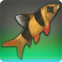 |
The Green Jester |
| 80 Lakes | |
| A king among clown loaches. |
A night in the foul belly of a morbol was not nearly enough to finish off this hardy loach, and if anything he emerged from the seedkin's nethers the following morn even stronger, if not a touch more green. |
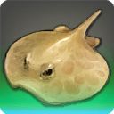 |
Bloodbath |
| 80 Rivers | |
| A king among monke onke. |
In her attempt to stay the hands of time, Lady Amandine would not only bathe in the blood of maidens, but the blood of just about anything she believed had skin more smooth or supple than hers─including forest fauna. As a result, especially plump monke onke were poached to near extinction at the behest of the vainglorious crone. |
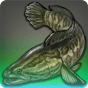 |
Son of Levin |
| 80 Lakes | |
| A king among judgment staves. |
There is a song sung by the sylphs which tells of a magnificent wavekin caught in the Black Shroud and presented to their lord, Ramuh as an offering. Taken by its beauty, the Lord of Levin judged that the fish was slain before its time, and granted it life anew. To see it go untouched for all eternity, he took it as his son. |
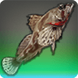 |
Thundergut |
| 80 Rivers | |
| A king among thunderbolt sculpin. |
Kobold legend tells of Thundergut─a mighty sculpin whose gluttony knows no bounds. He swallows the thunder from the clouds before it can manifest, and it is because of this insatiable greed that La Noscean storms are silent save for the falling of the rain. |
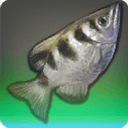 |
The Drowned Sniper |
| 80 Lakes | |
| A king among archerfish. |
The archerfish is already known for its uncanny ability to pick off targets from afar. This particular specimen, however, is said to never have missed a target, leading to rumors that the wavekin is possessed by the spirit of a famous local marksman who was drowned in the Agelyss River by his wife after being caught bathing with a young maiden. |
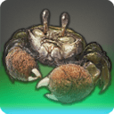 |
The Terpsichorean |
| 80 Rivers | |
| A king among mitten crabs. When given the opportunity, he will, quite literally, cut a rug. |
When selecting a mate, female mitten crabs will look no further than a male's claws. To make their mittens appear larger than they actually are, some males will put on a dance in which they wave their arms back and forth─a technique that works surprisingly well, as can be attested by all the baby crabs in Raincatcher Gully bearing the Terpsichorean's features. |
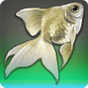 |
Mirrorscale |
| 80 Lakes M (2) | |
A king among silverfish.
[Suitable for display in aquariums tier 2 and higher.] |
This silverfish's scales are so polished that predators are oft frightened away by their own reflections. It is believed that this level of brilliance is maintained by Mirrorscale rubbing his body in the fine ashen sands deposited by nearby O'Ghomoro's frequent eruptions. |
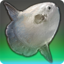 |
Helmsman's Hand |
| 80 Deep Sea XL (7) | |
A king among sunfish.
[Suitable for display in aquariums tier 4 and higher.] |
“From the Deep rose Helmsman's Hand
�For to aid Lady Bloefhiswyn.
�In his wake, she set her course
�And lo, was led to foreign shores.”
�
�From O'er Westward Seas
� ─Gilbert Goldenlocks, 1556 Sixth Astral Era |
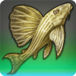 |
The Thousand-year Itch |
| 80 Lakes | |
| A king among loyal pleco. |
So loyal is this pleco, that it is said if abandoned, the wavekin will curse his owners, bringing them and their families a thousand years of misfortune. Considering the pleco only has an average lifespan of a few summers, it is best to keep the pet to its end, rather than suffer a fate worse than death. |
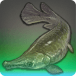 |
Hannibal |
| 80 Lakes L (4) | |
A king among alligator garfish.
[Suitable for display in aquariums tier 3 and higher.] |
After devouring all the other types of fish in his Bluefog hole, he set his sights upon his brother and sister garfish until they, too, were no more. Now, he tempts fate by purposefully nibbling on fishers' lines, so as to entice his victims into approaching the water where he might drag the pour soul into his trap. |
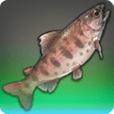 |
Dawn Maiden |
| 80 Rivers | |
| A queen among crimson trout. |
Ishgardian knights claim that if one catches the Warden kissing the dawn maiden at daybreak, the skies will be clear of dragons for the sun's full turn. It is not mentioned what might happen if the dawn maiden were to be caught by an ambitious angler. |
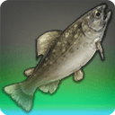 |
Starbright |
| 80 Rivers | |
| A king among kissing trout. |
The spotting on this otherwise inconspicuous kissing trout will glow a brilliant white when struck by the light of the moon, leading fishers to believe the fish to be blessed by the goddess Nymeia Herself. It has been noted that this divine illumination has no effect on flavor. |
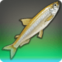 |
The Matriarch |
| 80 Lakes | |
| A queen among Abalathian smelt. |
The mother of a thousand spawn, this hot-blooded smelt swore revenge against mankind the very morning she woke to find her children being hauled away in a trawler's net. How she plans on exacting this revenge is yet to be determined. Please look forward to it! |
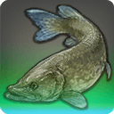 |
Shadowstreak |
| 80 Rivers | |
| A king among southern pike. |
For generations, fishers would tell their sons and their grandsons tales of Shadowstreak, an elusive pike ten yalms long and half as wide, with a maw large enough to swallow a pregnant bison whole, and fins sharp enough to cut through rock plated in steel-covered iron─with eyes that will snatch a man's soul from his bosom and a cry that will turn a babe's hair white. |
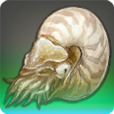 |
The Captain's Chalice |
| 80 Coastlines | |
| A king among nautiluses. |
Becoming a successful pirate is not as simple as merely procuring the three Ps─a parrot, a patch, and a peg leg. No, a true pirate needs a proper receptacle from which he (or she) will sip his (or her) grog, and what better a chalice than one carved from the shell of a giant nautilus? |
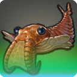 |
Anomalocaris |
| 80 Skies | |
| A king among rift sailors. |
At the apex of the Sea of Clouds food chain soars the anomalocaris, a breed of rift sailor that catches its prey by rising thermals high up into the heavens, and then plummeting headfirst into unsuspecting cloudkin before they have time to react. So beautiful is this predatory dance, that bards have written numerous ballads detailing its erotic intricacies. |
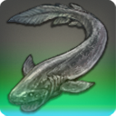 |
Frilled Shark |
| 80 Deep Sea | |
| An extremely rare breed of shark with a uniquely shaped maw hiding multiple rows of razor-sharp teeth. |
An ancient breed of shark thought to have descended from the giant scalekin which roamed Hydaelyn in the age before the Navigator, Hydaelyn summoned the serpent to fill the world's seas. Its multiple rows of razor-sharp teeth are arrayed in a pattern so complex that once caught in them, nothing short of excising the affected area will free it. |
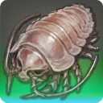 |
Aetherlouse |
| 80 Lakes |  |
| The recent discovery of this vilekin-like denizen of the deep has given rise to fantastical theories that all land-dwelling creatures on Hydaelyn may once have come from the seas. |
A denizen of the deepest, darkest reaches of the abyss, where few creatures dwell, the aetherlouse has adapted its diet to include the minute traces of residue from underwater aetherial nodes. |
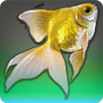 |
Imperial Goldfish |
| 80 Lakes | |
| A king among goldfish. |
One might think that a body covered in glittering gold scales would make the imperial goldfish a prime target for larger predators such as the jungle catfish...and they would be absolutely correct. The reason this specimen has survived so long is due to its ability to remain completely motionless when danger lurks nearby. |
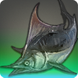 |
The Old Man in the Sea |
| 80 Deep Sea | |
| A king among Mazlaya marlin. |
This giant marlin earned its name after a legendary struggle with one of the realm's most famous fishers. For three days and three nights the grizzled Sea Wolf battled the stubborn marlin, neither showing any sign of yielding, until the old man lost his footing and tumbled into the sea. There he remains to this day─dragged by the marlin, hands still tight around his rod. |
|